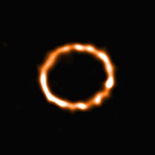

| NO. | CARACTERISTICAS |
|---|
| 1 | TEMPERATURA SUPERFICIAL:Las estrellas de tipo F tienen temperaturas superficiales que oscilan entre aproximadamente 6,000 y 7,500 Kelvin. |  |
| 2 | ESPECTRO:- Su espectro está dominado por líneas de hidrógeno (aunque no tan prominentes como en las estrellas de tipo A) y líneas metálicas, como las del hierro y el calcio ionizado.
- Estas estrellas presentan líneas de absorción de metales ionizados y neutros.
|
| 3 | COLOR:Son de color blanco o blanco-amarillento. |
| 4 | BRILLO:Son más brillantes que las estrellas de tipo G (como el Sol) y menos brillantes que las de tipo A. Su magnitud absoluta varía, pero en promedio son bastante luminosas. |
| 5 | EJEMPLOS NOTABLES:- Procyon A (α Canis Minoris) en la constelación de Canis Minor.
- Canopus (α Carinae) en la constelación de Carina.
- η Cassiopeiae A en la constelación de Cassiopeia.
|
| 6 | CICLO DE VIDA:Las estrellas de tipo F, como las de tipo A, están en la secuencia principal y fusionan hidrógeno en sus núcleos. Tienen vidas más largas que las estrellas de tipo A, pero más cortas que las de tipo G, típicamente de varios miles de millones de años. |